Где найдено: тестовый стенд salebot.zmservice.ru, проект 1002, аккаунт тестовый. Билд на стенде совпадает с боевым (дайджесты ассетов идентичны), поэтому почти всё воспроизводимо и на salebot.pro / mavibot.ai.
Нумерация: сквозная, D-N. Номер закрепляется за дефектом навсегда — если запись уходит из журнала, её номер не переиспользуется, поэтому в списке есть пропуски.
Легенда статусов: 🔴 баг · 🟡 спорно / вопрос к продукту · ⚪️ не подтверждено
D-4 Молчание 2–3,5 минуты без промежуточного вывода
🔴 Баг (UX).
Замеренные тайминги на кнопке «Собрать» и на запросе в чат:
Действие
Время
«Собрать» → Онлайн-запись
3 м 21 с
«Создать мастеров»
2 м 4 с
Запрос в чат «заполни базу знаний»
3 м 19 с
Всё это время — серые скелетоны и надпись «Сверяю данные…». Ни одной строки о том, что именно сейчас происходит. Работа при этом идёт настоящая, но пользователь этого не видит и решит, что всё зависло.
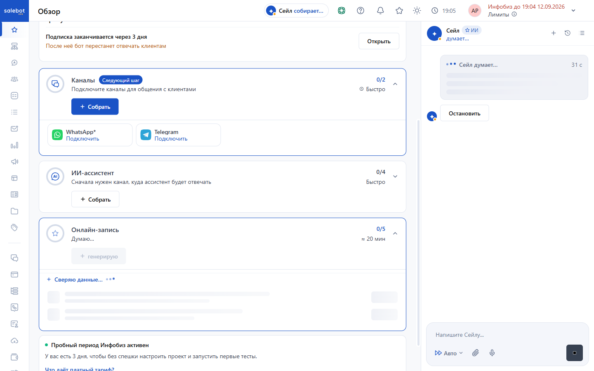
D-6 Прогресс не пересчитывается после работы ассистента
🔴 Баг.
Шаги: нажать «Создать мастеров» в чате → дождаться ответа «Готово! Создал двух мастеров-гончаров».
Ожидалось: счётчик шагов вырос. Получилось: слева по-прежнему «3 из 11», 27 %. Проверено программно, значение не менялось.
Знаменатель успел побывать 11, 5 и 10. Числитель один раз уменьшился с 4 до 3, хотя пользователь ничего не удалял. От ширины окна не зависит — проверено на 1440 и 390 px и после явного reload.
Плюс отдельная шкала в шапке раздела «Услуги»: «Готовность 3/5» — не совпадает с обзорной.
Для новичка это разрушает единственный ориентир, который у него есть.
D-8 Лог действий подписан без объекта
🔴 Баг (текст).
В блоке «Выполнено» строки называются «Создаю», «Создаю товар», «Создаю точку» — без указания, что именно создано. Пользователь видит, что что-то произошло, но не понимает что.
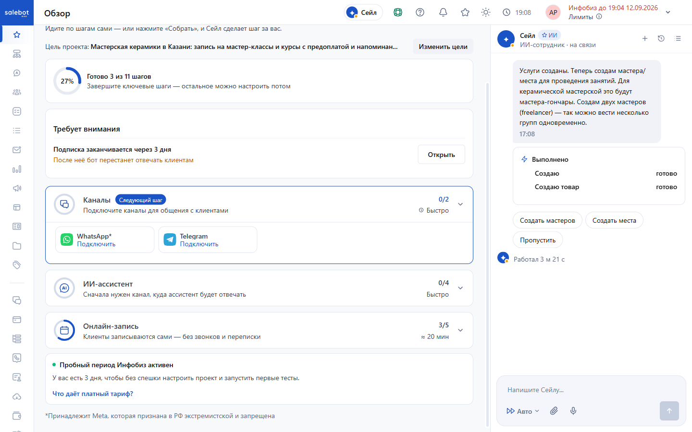
D-20 Карточки-рекомендации сообщают неправду
🔴 Баг. Самый показательный из всех.
На нагруженном аккаунте под метриками появляются три карточки-рекомендации. Две из трёх противоречат тому, что уже произошло в этом же проекте:
Карточка
Что говорит
Как на самом деле
«Запись пока ведётся вручную»
«Клиенты спрашивают свободное время, цены и можно ли вдвоём. Сейчас на это отвечаешь ты сам»
На это только что ответил ассистент, без участия человека
«Научить ассистента ценам и расписанию»
«Ассистент ещё не знает ваши цены… Добавим базу знаний — и он сам ответит про свободное время и „можно ли вдвоём“»
База знаний заполнена часом ранее, ответ про «вдвоём» уже отдан клиенту
Экран уговаривает сделать то, что уже сделано.
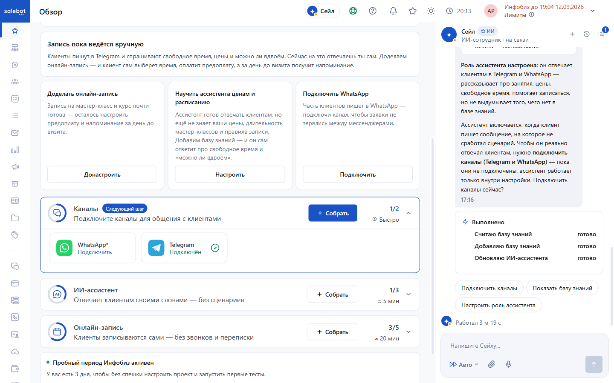
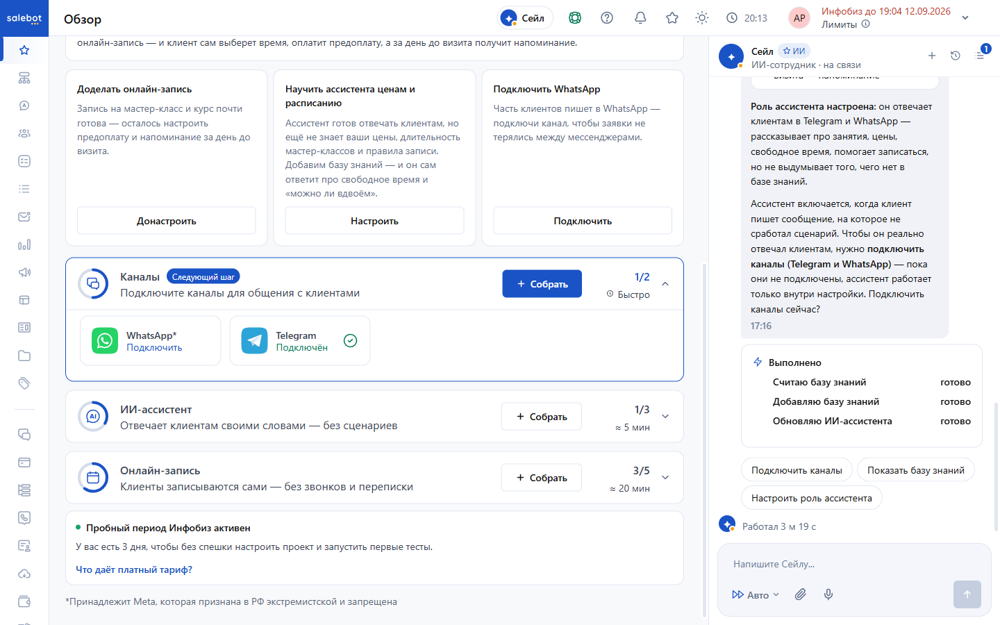
Онлайн-запись и услуги
D-10 Вместимость 1 при явном «придём вдвоём»
🔴 Баг.
В описании бизнеса прямым текстом: «клиенты спрашивают… можно ли прийти вдвоём». Созданная услуга «Мастер-класс по гончарному кругу» имеет Вместимость = 1.
При этом ассистент в диалоге уверенно отвечает клиенту, что вдвоём можно, и считает 7000 ₽ за двоих. То есть бот обещает то, чего настройка услуги не позволяет.
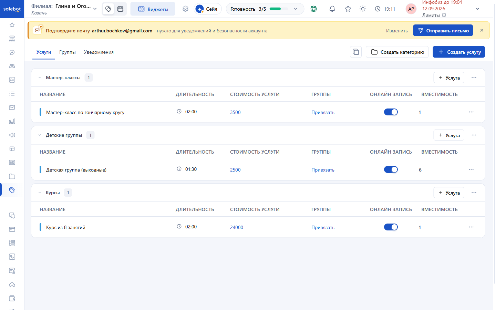
D-11 Цена детской группы выдумана
🟡 Спорно.
Я назвал две цены: мастер-класс 3500 ₽ и курс 24000 ₽. Обе перенесены верно. Для «Детской группы (выходные)» цена 2500 ₽ проставлена самостоятельно — я её не называл и об этом не спросили.
Опасно тем, что цена выглядит как подтверждённая пользователем.
ИИ-ассистент
D-12 После онбординга пуст и выключен
🔴 Баг.
Шаги: в онбординге оставить отмеченным чип «ИИ-ассистент» → создать проект → открыть раздел «ИИ-ассистент».
Ожидалось: ассистент настроен по описанию бизнеса. Получилось: «Настройки бота» пусты (плейсхолдер «ТЫ - (имя бота и его роль)»), «Знания бота» пусты, статус — Выключен. Модель по умолчанию DeepSeek-V4-Flash.
Всё, что пользователь рассказал в онбординге, до ассистента не доехало. Заполнилось только после отдельной явной просьбы в чате.
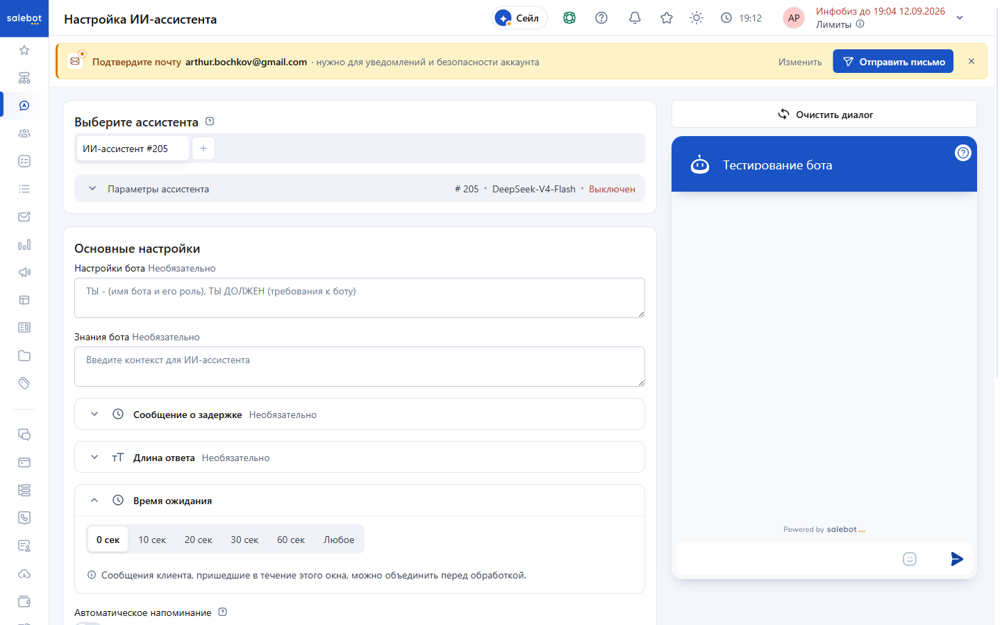
D-18 Виджет «Тестирование бота» не показывает ответ
🔴 Баг.
Шаги: ИИ-ассистент → виджет «Тестирование бота» справа → отправить сообщение «Хочу записаться на мастер-класс…».
Ожидалось: ответ бота в виджете. Получилось: ответа нет ни через 20 с, ни через 60 с. Виджет показывает только собственное сообщение.
При этом ответ существует — он лежит в разделе «Диалоги» и отправлен вовремя. То есть бот работает, а инструмент проверки бота показывает, что он сломан. Для новичка это прямой повод решить, что продукт не работает.
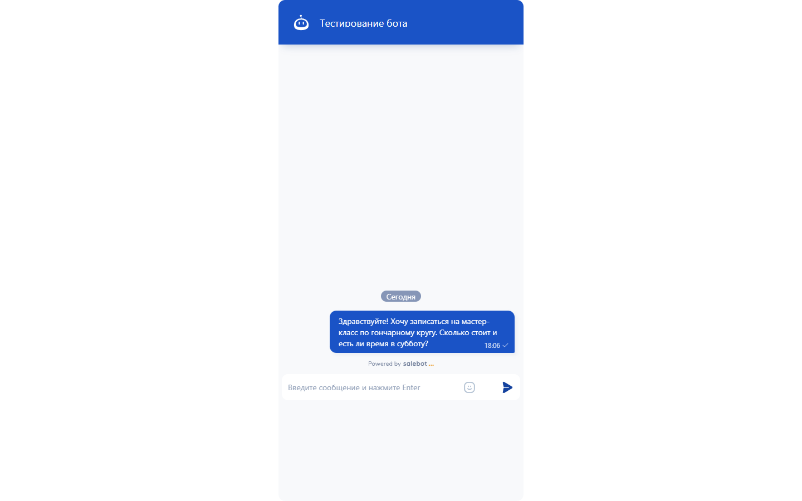
D-19 Имя и телефон из диалога не попали в CRM
🔴 Баг.
Шаги: написать боту «…запишите меня на субботу, придём вдвоём с женой. Меня зовут Игорь, телефон 9271234567».
Ожидалось: имя и телефон в карточке клиента. Получилось: в карточке «Номер телефона: Добавить телефон», «Email: Добавить почту», имя клиента — «Клиент 09.09 18:06».
Ассистент данные распознал — он обращается «Здравствуйте, Игорь!». Но в систему они не записаны, то есть заявка есть, а контакта у бизнеса нет.
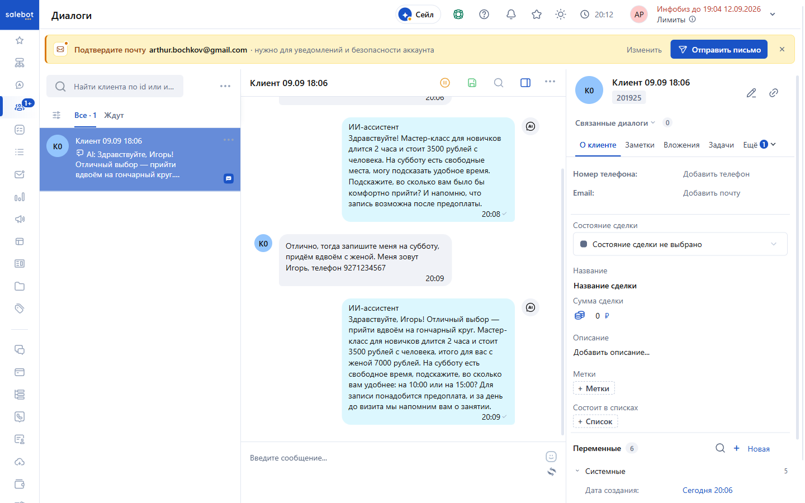
Конструктор
D-13 Не знает контекста онбординга
🔴 Баг.
Шаги: пройти онбординг с подробным описанием бизнеса → открыть «Конструктор».
Получилось: холст пуст, всплывает модалка «Генерация чат-бота — Какую воронку вы хотите сгенерировать?» с вариантами «Чат-бот визитка» и «Другое — AI соберёт воронку по вашему описанию».
У пользователя заново спрашивают то, что он подробно рассказал пять минут назад.
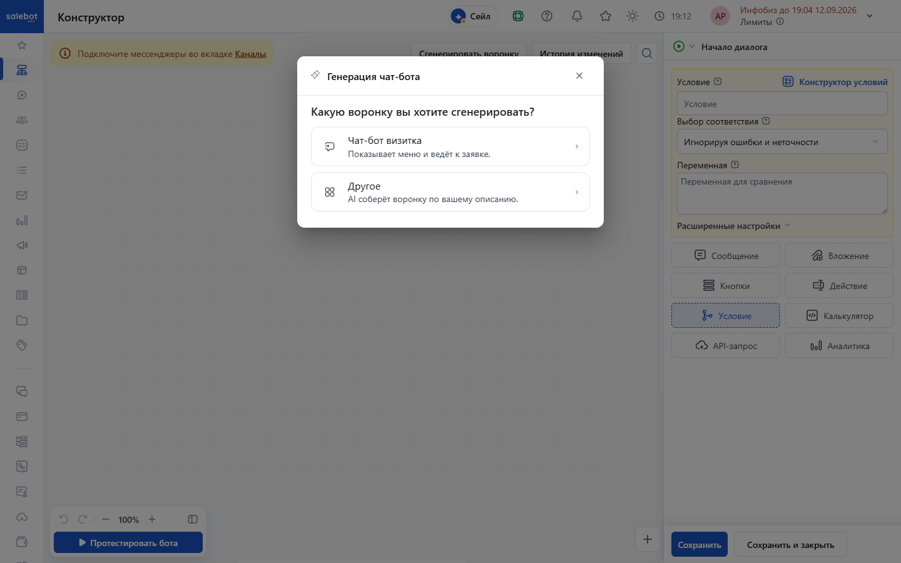
Мобильная версия
D-15 Мобильная версия содержательнее десктопной
🔴 Баг (рассинхрон вёрсток).
В блоке «Требует внимания» на мобильном есть пункт, которого нет на десктопе:
Каналы ещё не подключены — запись идёт вручную Пока нет ни Telegram, ни WhatsApp, клиенты не могут записаться сами и писать в чат. [Подключить]
На десктопе в этом блоке только строка про подписку. Один и тот же экран показывает разный набор проблем в зависимости от ширины окна.
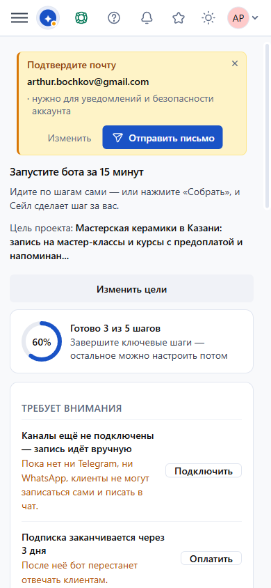
Прочее
D-16 «Показать сводку» недоступна для нажатия
🟡 Вопрос к продукту.
В шапке чата Сейла есть кнопка «Показать сводку». У неё opacity: 0 и pointer-events: none — нажать нельзя, видно её тоже нельзя.
Похоже, появляется по какому-то условию (свёрнутый чат?), но по названию это самая интересная для нас функция — сводка по проекту. Разобраться, при каких условиях она показывается.
D-17 Кнопка «Подключить бота» залипла в «Загрузке»
Ожидалось: переход на шаг 2 «Сканирование QR» с QR-кодом.
Получилось: кнопка сменилась на «Загрузка» со спиннером и осталась в этом состоянии навсегда — ждал 25 и 20 секунд в двух заходах. QR не появился, шаг 2 не открылся, модалка не закрылась, ошибки пользователю не показано вообще: на странице нет ни слова «не удалось», ни «попробуйте позже».
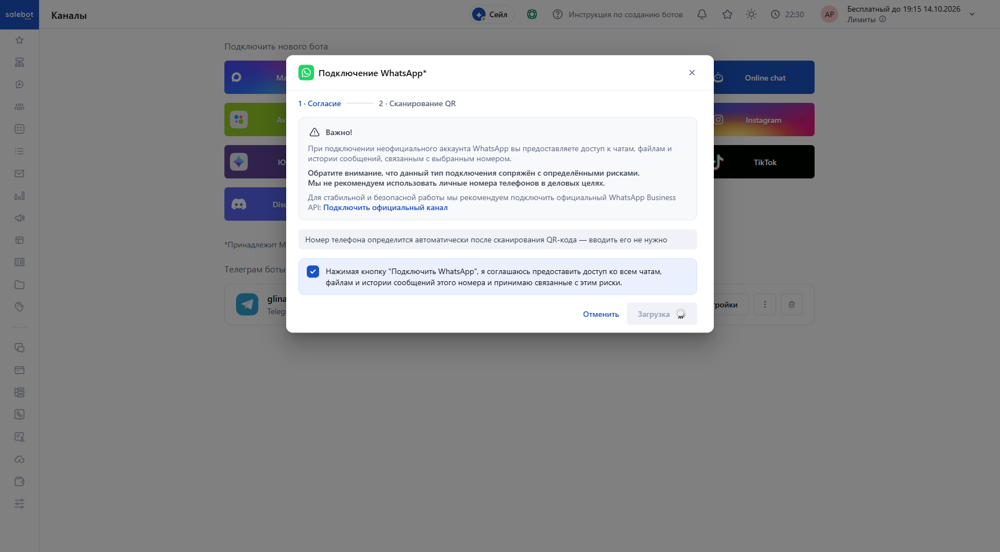
Причина видна в сети. Запрос POST /projects/1002/whatsapp_bots отвечает 500, в теле — трассировка Puma:
Приложение идёт к шлюзу WhatsApp по HTTPS, сертификат шлюза не совпадает с именем хоста, Faraday падает, Rails отдаёт 500. То есть подключение не начинается вовсе — это не долгая операция, а мгновенная ошибка, которую интерфейс не показывает.
Это два дефекта в одном:
Серверный — шлюз WhatsApp недоступен из-за несовпадения сертификата.
Интерфейсный — ответ 500 проглочен: обработчика ошибки нет, кнопка остаётся в загрузке бесконечно.
Связь с D-17. Там тот же интерфейсный симптом на Telegram, и тогда было непонятно, случайность это или нет. Теперь видно: обработчика ошибки просто нет — при любом неудачном ответе кнопка залипает. Разница в том, что в D-17 действие фактически прошло (бот подключился, а интерфейс промолчал), а здесь не прошло ничего, и человек об этом не узнает.
Почему важно: WhatsApp — один из двух каналов, которые сам Сейл называет обязательными («пока каналы не подключены, ассистент работает только внутри настройки»). Новичок упирается в вечный спиннер: ни ошибки, ни подсказки, ни возможности повторить — только закрыть модалку и гадать, подключилось оно или нет.
Оговорка. Проверено на стенде salebot.zmservice.ru. Несовпадение сертификата может быть особенностью стенда; на боевом salebot.pro проверить нечем — боевого аккаунта у нас нет. Интерфейсная половина дефекта от среды не зависит: 500 не показывается пользователю в любом случае.
D-22 Гео-баннер «Salebot доступен только в РФ» на входе
🟡 Вопрос к продукту.
На странице логина снизу висит чёрная плашка:
Salebot доступен только в РФ. Используйте mavibot.ai · [Открыть mavibot.ai]
Сработала на обычном входе. Стоит проверить логику определения региона: если она ошибается, российский пользователь получает предложение уйти на международную версию прямо на входе.
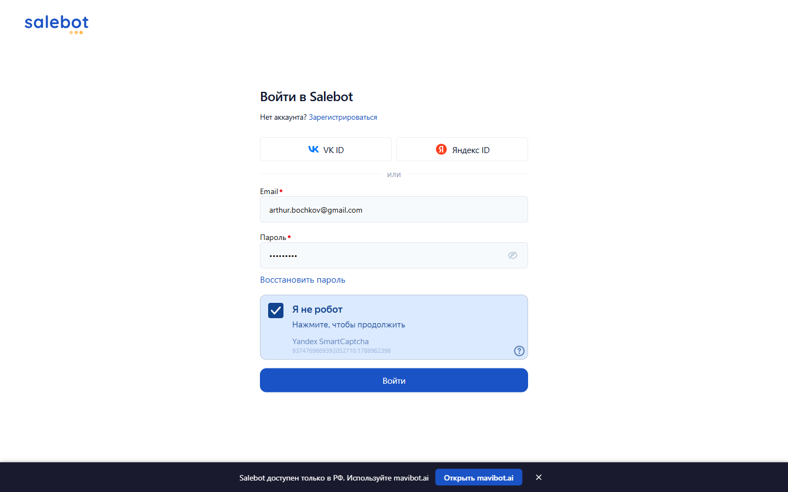
D-23docs.salebot.pro отдаёт 502
🔴 Баг (инфраструктура).
Документацию перенесли внутрь приложения — актуальные адреса salebot.pro/docs и mavibot.ai/docs. Старый домен docs.salebot.pro не редиректит, а отдаёт 502.
При этом на него ссылается вся поисковая выдача и, судя по всему, часть внешних материалов. Пользователь, пришедший за инструкцией, упирается в ошибку сервера.
Аккаунт не трогали пять суток. Пробный период за это время кончился — и это само по себе дало материал: видно, как продукт ведёт себя с остывшим проектом и просроченной подпиской.
D-25 Расписание пустое: все семь дней «Выходной»
🔴 Баг.
Шаги: «Услуги» → иконка календаря в шапке → «Неделя».
Получилось: в неделе 14–20 сентября каждый из семи дней подписан «Выходной», свободных слотов нет ни одного. Мастера, созданные Сейлом при сборке, остались без графика работы — он их завёл заглушками «Мастер-гончар 1» и «Мастер-гончар 2» и на этом остановился.
Почему важно, а не мелочь: ассистент в живом диалоге предлагал клиенту субботу 10:00 и 15:00 (см. D-19) — времена, которых в расписании не существует. То есть «онлайн-запись собрана» на экране «Обзор», ассистент назначает встречи, а календарь при этом пуст. Это не расхождение счётчика, а обещание клиенту, которое система не может выполнить.
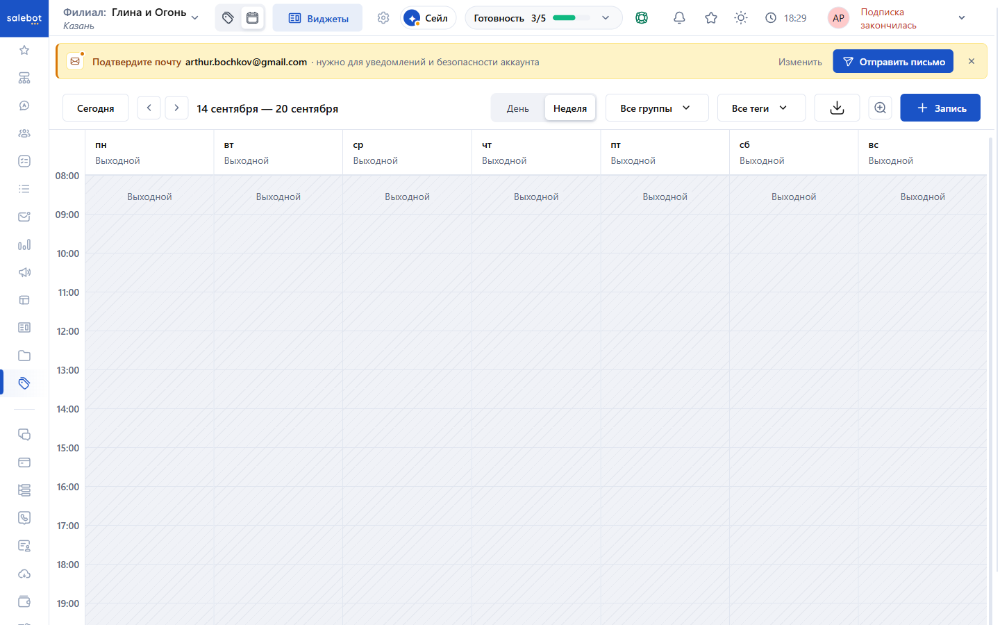
Связка с D-10 (вместимость 1 при «придём вдвоём») и D-11 (выдуманная цена): сборка создаёт структуру и не доводит её до рабочего состояния, а экран рапортует о готовности.
D-26 «Подписка заканчивается через 3 дня» после того, как она закончилась
🔴 Баг.
Получилось одновременно, на одном и том же экране:
Где
Что написано
Шапка кабинета, справа
«Подписка закончилась»
/payment_info, «Оплачен до»
«Подписка закончилась»
«Обзор» → блок «Требует внимания»
«Подписка заканчивается через 3 дня. После неё бот перестанет отвечать клиентам»
Блок «Требует внимания» показывает текст пятидневной давности. Это тот же разрыв, что и D-20, только теперь на биллинге: экран не пересчитывается и сообщает неправду о собственном состоянии счёта.
Попутно: переход на /projects/1002/ теперь редиректит на /payment_info, но все разделы по прямым адресам открываются — жёсткой блокировки нет, только корень проекта.
Попутно-2: шкала прогресса снова с новым знаменателем — «Готово 5 из 10 шагов», 50 % (было 11, потом 5, потом 10 — см. D-7).
Попутно-3:D-20 воспроизводится через пять дней слово в слово. На одном кадре слева карточка «Научить ассистента ценам и расписанию — ассистент ещё не знает ваши цены», справа в чате отчёт Сейла «Роль ассистента настроена… Добавляю базу знаний — готово». И рядом «Запись пока ведётся вручную… Сейчас на это отвечаешь ты сам» при подключённом Telegram и отвечавшем ассистенте.
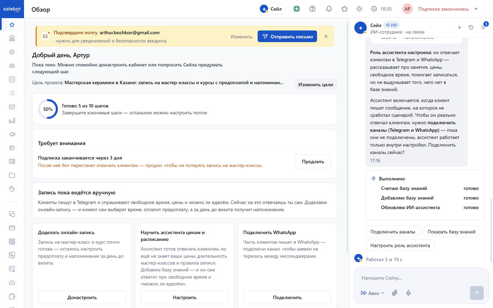
D-28 Расписание на неделю спрятано за безымянной иконкой
🟡 Спорно.
Экран недели есть (я сначала решил, что его нет). Живёт он не в меню, а внутри «Услуг»: в шапке рядом с названием филиала стоят две иконки-переключателя без подписей — список услуг и календарь. Внутри календаря — «День / Неделя», фильтры по группам и тегам, выгрузка, масштаб, «+ Запись». Адрес детерминированный и с параметрами: settings_online_record?pipeline_id=1173&mode=0&main_date=2026-09-14 (mode=0 неделя, mode=1 день).
Почему это претензия, а не находка: у продукта с онлайн-записью главный экран владельца — его неделя. Здесь он есть, но в меню не назван, подписи у иконки нет, и попасть в него можно, только уже находясь в «Услугах» и догадавшись нажать.
Для концепции это плюс: переход «в четверг пусто → открыть расписание» ведёт в живой экран с готовыми параметрами периода, а не в никуда.